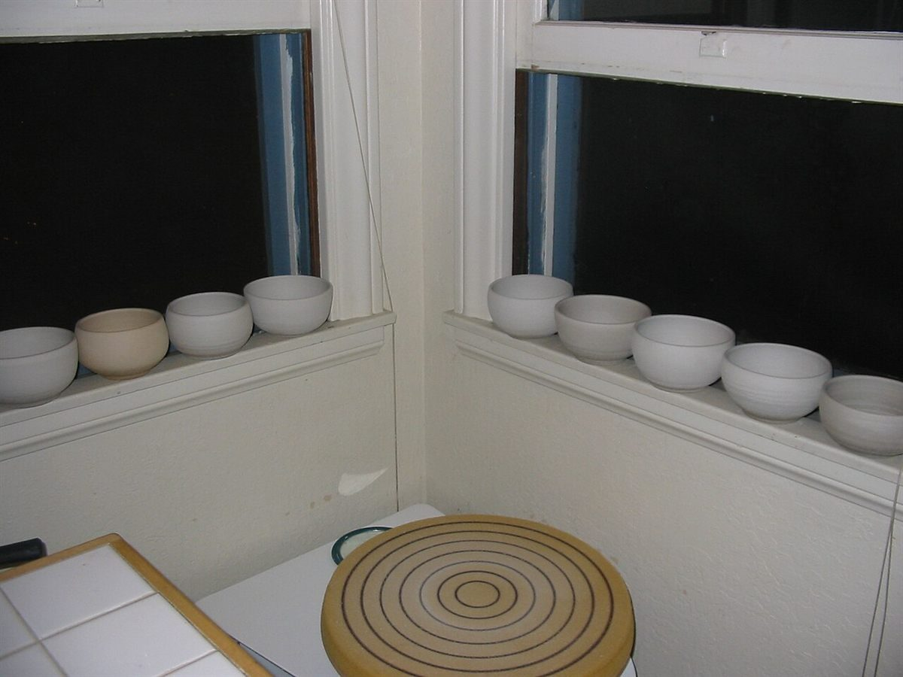

弱火 ― 店のこと
店のこと
お店について確認できているのは、所在地とInstagramのアカウントだけです。
このページの「想像してみる」の部分は、制作側が想像して書いたものです。お店の実際の様子・考え・メニューとは関係がありません。
確認できていること
- 店名は「soup cafe bliss」、業種はカフェ
- 所在地は静岡県下田市東本郷1丁目21-12(〒415-0035)
- 電話番号はなし。連絡はInstagramから
- 営業時間・定休日・メニュー・価格・ご予約・駐車場は準備中

想像してみる(制作側の連想)
火加減を、五つの言葉で。
以下は制作側の連想です。お店の理念・由来とは無関係で、事実として示すものではありません。
- とろ火
- 始まりの段階。ふたを開けず、そっと待つ。このサイトではホームにあたります。
- 弱火
- 焦らず、確かなことから並べる段階。このページです。
- 中火
- 中身が動き出す段階。メニューのページにあたります(中身は準備中)。
- 強火
- にぎやかに沸き立つ段階。創作の口コミを置いたページです。
- 火を止める
- 余熱で落ち着く段階。場所と連絡先をまとめたページです。

